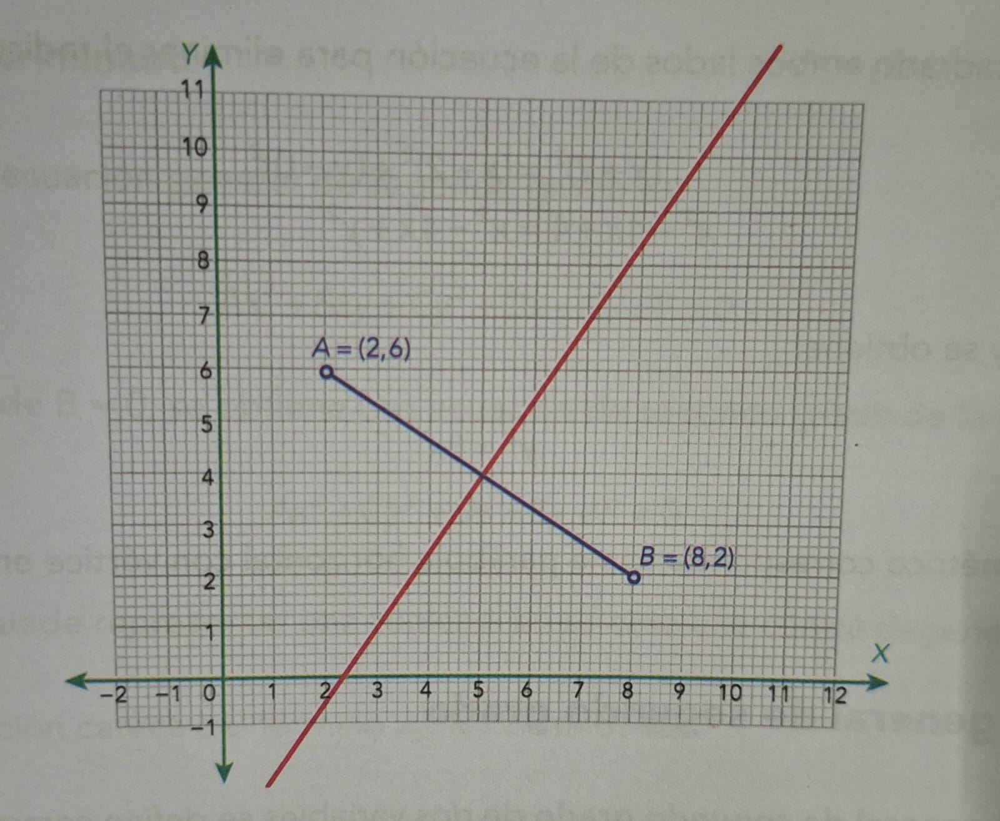
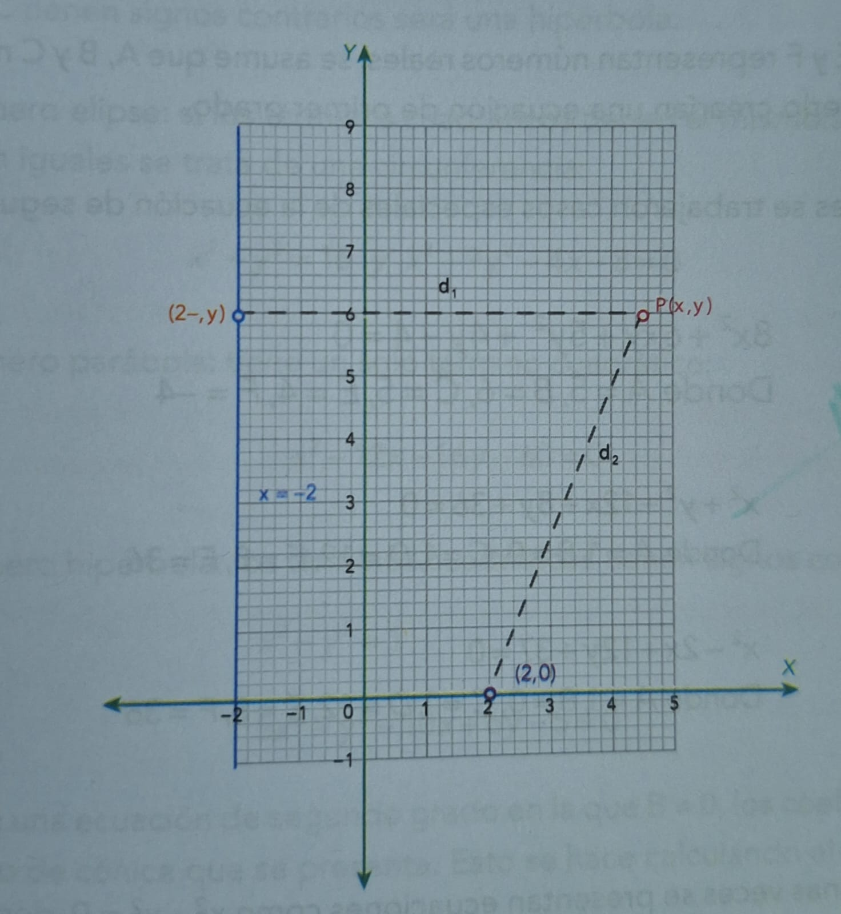

DETERMINACIÓN DE LA ECUACIÓN DE UN LUGAR GEOMÉTRICO
El segundo problema fundamental de la geometría analítica consiste en que, dada una figura geométrica, o la condición que deben cumplir los puntos de la misma, se tiene que determinar su ecuación.
Es posible determinar una ecuación desde un lugar geométrico, a partir de un conjunto de puntos que tienen cierta propiedad geométrica o de una gráfica.
EJEMPLO 1:
Determina el lugar geométrico de un punto que al moverse equidista siempre de los puntos \(A(2,6) Y B(8,2)\)
SOLUCIÓN:
Se toma el punto P \( (x,y) \) cualquiera del lugar geométrico. Este debe cumplir la condición geométrica de ser equidistante al punto A y B. Es decir, cumple con la condición.
\( PA = PB\)
Por lo tanto, se emplea la fórmula de distancia entre dos puntos, es decir:
d\( (P_1, P_2) \)= \( \sqrt{(x_2 - x_1)^2 + (y_2 - y_1)^2}\)
Se aplica esta fórmula y se tiene:
d\( P, A \)=\( \sqrt{(x - 2)^2 + (y - 6)^2}\) = \(\sqrt{(x - 8)^2 + (y - 2)^2}= d(P,B)\)
Se elevan al cuadrado ambos miembros de la igualdad con el objeto de eliminar los radicales y queda la ecuación:
\((x - 2)^2 + (y - 6)^2 = (x - 8)^2 + (y - 2)^2\)
Se desarrollan los binomios y se obtiene:
\(x^2 - 4x + 4 + y^2 - 12y + 36 = x^2 - 16x + 64 + y^2 -4y + 4\)
\(x^2-4x+4-y^2-12y+36=x^2-16x+64+y^2-4y+4\)
Se resaltan los términos semejantes:
\(12x - 8y - 28 = 0\)
Esta ecuación es equivalente a \(3x - 2y - 7 = 0\), que corresponde a la mediatriz del segmento de recta \(AB.\)

EJEMPLO 2:
Determina el lugar geométrico de un punto que se mueve de tal manera que su distancia a la recta \( x = -2 \) es siempre igual a su distancia del punto \((2,0)\).
SOLUCIÓN:
Según la condición dada y de acuerdo con la figura que representa la situación, debe cumplirse que:
\(d_1=d_2\)
\(x+2 = \sqrt{(x-2)^2+(y-0)^2}\)
Se elevan al cuadrado ambos lados de la ecuación para eliminar el radical y se obtiene:
\((x+2)^2=(x-2)^2+(y-0)^2 \)
\(x^2-4x+4=x^2-4x+y^2\)
Se simplifica y se obtiene:
\(y^2= 8x\)
El lugar geométrico corresponde a una parábola horizontal con vértice en el origen.

REGRESAR AL ÍNDICE